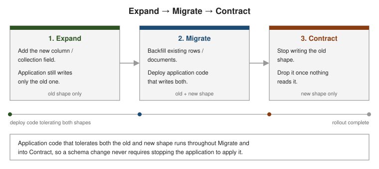

Best Practices
|
This content was generated with the assistance of AI and should be verified against the official documentation before being relied on in production. |
The tool-specific pages in this guide cover how Liquibase, Mongock and Flamingock each execute a change. This page covers practices that apply regardless of which tool you use — the habits that keep a migration safe in production rather than just correct in isolation.
Backward-Compatible Changes: Expand/Contract
The single most important practice is never breaking the currently-deployed application version with a schema change. Since a rolling deploy runs old and new application code side by side for some period, and a migration can run before, during or after that deploy depending on the tool and pipeline, every intermediate state has to work for both code versions. The pattern that guarantees this is expand/contract, run as three phases:

-
Expand — add the new column/field alongside the old one. Nothing reads or writes it yet; the schema is additive, so the currently-running old application code is completely unaffected.
-
Migrate — backfill existing rows/documents into the new shape, and deploy application code that writes both the old and new shape (and reads from whichever is authoritative). This is the only phase where old and new application code, and old and new data shape, must all coexist safely.
-
Contract — once every consumer has been confirmed to use only the new shape, stop writing the old one, then drop it in a later change unit. This step is intentionally the last one, and often held for a separate release, so there is a rollback path (redeploy the previous application version) all the way up until the old shape is actually dropped.
The Bookshop Name Split, Release by Release
The running example splits the single full_name / fullName field of a customer into a first and last name. Each
release is a separate change unit, and each state of the data must work for the application version that runs
against it:
| Release | Schema/data change | Application behaviour |
|---|---|---|
1 |
|
Reads and writes |
2 — expand |
Add nullable |
Writes both shapes; reads the new one and falls back to the old one for rows not backfilled yet. |
3 — contract |
Drop |
Reads and writes only the new shape. Release 1 code can no longer run against this database. |
In Liquibase the expand is an addColumn changeset and the backfill a separate sql changeset (see
Liquibase: Changelogs & Changesets); in
Mongock it is the V002_SplitName unit of
Mongock: ChangeUnits; in Flamingock it is
_0003__ExpandName followed by _0004__ContractFullName (the contract step is shown there in the same stage
only to demonstrate ordering — in a real project it ships in a later release, as in the table above).
One Logical Change per Change Unit
Keep each changeset/changeunit/change scoped to one logical change — the same recommendation Liquibase makes explicitly for changesets (Liquibase: Changelogs & Changesets), and good practice for Mongock and Flamingock too. A change unit that bundles several unrelated changes is harder to review, harder to roll back cleanly (undoing one part without the others), and makes the audit trail less meaningful — one row per logical change is what makes "what changed and when" a useful answer.
Never Edit an Already-Applied Change
Once a change unit has been recorded as applied anywhere — even just in a developer’s local database — treat it as immutable. Editing it instead of appending a new one breaks the checksum assumption every tool relies on (Core Concepts's checksum section): Liquibase will flag the mismatch and refuse to proceed by default (Liquibase: Tracking & Locking), while Mongock and Flamingock have no checksum concept for code changes at all, so an edited class simply never re-runs anywhere it already ran — silently, with no error. If a change unit turns out to be wrong, add a new one that corrects it; the audit trail should show the mistake and the fix as two entries, not a rewritten history.
Testing Migrations in CI
Run every change unit against production-like data in CI before it reaches production — not just against an empty schema. An empty-database test catches syntax errors but misses the failure modes that actually matter: a backfill that times out against realistic row/document counts, a unique constraint that conflicts with real duplicate data, or a lock that’s held long enough to matter under load.
The disposable database can be as simple as a container started by the build:
-
Liquibase — point the CLI or Maven plugin at a fresh PostgreSQL container and run
update; thenupdate-testing-rollback, which applies pending changesets, rolls the most recent ones back and applies them again, proves that the rollbacks work; finallyupdate-sqlagainst the next release reviews its SQL. -
MongoDB — run the migration against a one-node replica set (transactions need one) started with
mongo:8 --replSet rs0, as in the Mongock and Flamingock examples of this section. -
Flamingock — its BDD-style testing API (Flamingock: Testing) runs the real pipeline in a unit-test runner and asserts on the audit trail.
Ordinary integration tests against a disposable database (a Testcontainers instance, for example) suit all three
tools; Liquibase’s update-sql
(Liquibase: Getting Started) is a useful pre-CI
sanity check for what a changeset would actually execute.
Coordinating Rollout With the Application Deploy
A migration and the application deploy that depends on it are two separate events, and the order between them matters. The expand/contract pattern above is what makes this coordination possible: deploy application code that tolerates both the old and new schema before running the migration that removes the old shape, so a migration failure or a rollback of the application deploy never leaves the system in a state neither application version can handle. Flamingock’s stages (Flamingock: Stages & Pipelines) give this a place to live — a "pre-deploy" stage with the schema changes the new code needs, and a "post-deploy" stage for cleanup once it’s confirmed healthy. Stages are not ordered relative to each other, though, so the guarantee comes from the deployment, not from Flamingock: the pipeline (or the application’s startup) must stop when the pre-deploy stage fails, and a change must never sit in a different stage from the change it depends on.
If the migration job fails, the pipeline stops before the rolling update, and the old version keeps running against a database that is at worst unchanged.
Zero-Downtime Strategies, in General
Beyond expand/contract itself:
-
Avoid long-held locks on large tables. An
ALTER TABLEthat locks a hot table for the duration of a large rewrite blocks production traffic; prefer online-migration techniques (adding a nullable column instead of aNOT NULLcolumn with a default that rewrites every row, for example) and check the target database’s own guidance on which DDL operations are online versus blocking. -
Backfill in batches, not one giant
UPDATE/bulk write, so a backfill doesn’t hold locks or blow up transaction/oplog size for the whole migration at once (a worked example follows this list). -
Make the migration idempotent and resumable (Core Concepts), so a batched backfill interrupted partway through can safely restart from where it left off rather than needing to be re-run from scratch.
-
Feature-flag the cutover from the old shape to the new one in application code, so the read-path switch is a fast, reversible toggle rather than tied to a deploy.
-
Monitor lock wait time and replication lag during the migration, not just its own success/failure, since a migration that "succeeds" while stalling replicas or blocking other queries has still caused an incident.
A Batched, Resumable Backfill
The bookshop adds a loyaltyTier to every customer. Written as one updateMany it is a single write over the
whole collection. The Mongock unit below selects a bounded batch of documents that still lack the field, updates
just those, and repeats until none are left. Because the selection is documents without loyaltyTier, the unit
is also resumable: if the process dies after batch 2, restarting it continues with whatever is left. It runs with
transactional = false because a transaction per unit would put the entire backfill back into one transaction:
@ChangeUnit(id = "backfill-loyalty-tier", order = "004", author = "alberto", transactional = false)
public class V004_BatchedBackfill {
private static final int BATCH_SIZE = 1000;
@Execution
public void execution(MongoDatabase db) {
MongoCollection<Document> customers = db.getCollection("customer");
while (true) {
List<ObjectId> ids = new ArrayList<>();
for (Document d : customers.find(Filters.exists("loyaltyTier", false))
.projection(new Document("_id", 1)).limit(BATCH_SIZE)) {
ids.add(d.getObjectId("_id"));
}
if (ids.isEmpty()) {
break;
}
customers.updateMany(Filters.in("_id", ids), Updates.set("loyaltyTier", "STANDARD"));
}
}
@RollbackExecution
public void rollback(MongoDatabase db) {
db.getCollection("customer").updateMany(new Document(), Updates.unset("loyaltyTier"));
}
}Run against a collection of 2,502 customers, it reports (with a counter added for the demonstration):
batch 1: 1000 customers
batch 2: 1000 customers
batch 3: 502 customers
backfilled 2502 customers in 3 batchesThe trade-off is the one stated in the opening of this page: with transactional = false a crash in the middle
leaves a partly backfilled collection, which is acceptable here only because the application tolerates a missing
loyaltyTier during the expand phase. The same shape in SQL is a loop of bounded UPDATE statements that each select a limited set of ids with a
subquery and LIMIT, run from a procedure or an application-side job rather than a single changeset.
A Release Checklist
| Question | Where to look |
|---|---|
Is every change additive, or is the destructive step isolated in a later release? |
|
Does every change unit do exactly one thing, and can it be reviewed alone? |
|
Was any already-shipped change unit modified? |
|
Has the migration run against production-sized data in CI? |
|
Will the old and the new application version both work in every intermediate state? |
|
Are long-held locks and giant transactions avoided? |